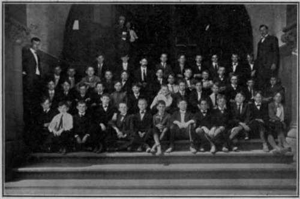
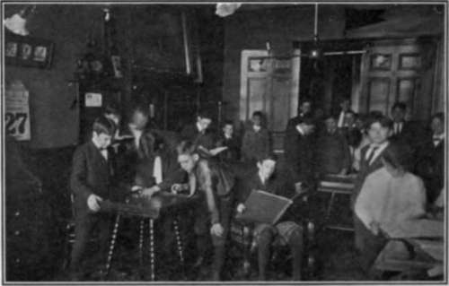

A Boys Summer School
Description
This section is from the book "Educational Activities For Boys", by Anonymous. Also available from Amazon: Educational Activities for Boys.
A Boys Summer School
No other feature of our work for boys has evoked such hearty expressions of gratitude and pleasure from parents as the last year's summer school, nor in any other feature have I seen the boys themselves manifest such intense interest and such a bubbling over of enthusiasm.
One boy, particularly, who seemed to have been misunderstood by his teacher, who had had difficulties during the year and whose mother was all but discouraged, came into the school and quickly awakened to the possibilities within himself. He expressed the keenest interest and pleasure in his work. He was regular in attendance and brought in four other boys before the end of the term.
A woman came to me just a few minutes before the opening of the school. She had left home before 8 o'clock that morning and gone from one end of the city to the other, stopping at four or five places where she had been told she might get the desired help for her boy.
She came to the Association as a last resort, not knowing that we were conducting such a school. Her intense interest in her boy's education and her look of gratitude upon finding that we would instruct him during the summer were enough to repay much of the effort in its organization, and have spurred me on to more thoroughly advertise this school another year.
A business man residing in a suburb, whose boy had apparently lost all interest in school during the last few weeks before its close and who had found it hard to get up in time to reach school only a few blocks away by 8:30 o'clock, brought in his boy to see if we could help him get ready for the high school. In a few days, he came in again and asked what we had done to the boy. He was up and ready to leave home before 7 o'clock in the morning without a second calling and was eager to get to school. The boy passed the entrance examinations to the high school without difficulty.
Our boys' summer school was practically forced upon us in 1905. We were conducting a day commercial school, together with some work in the common school branches for those who needed it in preparation for the commercial work. Several business men in the city urged us to take their boys during the summer and help them make up for time lost during the school year or improve in subjects in which they were deficient and conditioned. We accepted a few boys at the regular tuition fee of $10 per month, but found that, in order to give them the help they needed, it would be necessary to obtain a special teacher. This was done and the boys got along nicely, while their parents seemed more than satisfied.
SUMMER SCHOOL CLASS, CINCINNATI.
That experience was sufficient to lead us to investigate the matter and to plan definitely for such a school the next year. The superintendent of our city schools was consulted, as well as the principals, many of whom I found were much opposed to schoolroom work for any boy during the summer. They all were willing to admit, however, that there were exceptions; for instance, those who were behind on account of sickness, the misfit in a grade, or any who were conditioned in one or two subjects. Very few of these principals thought a boy ought to study more than three subjects during the summer, preferring that he take the same grade another year.
We advertised the school by informing principals and teachers what we expected to do. This was done chiefly by personal letters and interviews. Blotters with pictures showing scenes in our swimming pool, camp and school room, with a few lines giving date of camp, opening of school, and tuition, were distributed to the pupils of the sixth, seventh and eighth grades of the intermediate school and to the first-year students of the high school. A folder giving definite information was sent to those whose names were given to us by principals. Several of these folders were sent to different principals and teachers to be handed out by tin in.
One or two advertisements were put in the daily papers.
At the last meeting of the Principals' Association before the close of the public schools, I presented an outline of our plans and asked for any suggestions. While no particular comment was made then, a number of principals later on heartily endorsed the scheme and, at our request, sent us names of those in their classes who might be helped by the summer school. One feature to which we called attention in our announcements was the boys' camp which began on the Monday after the close of school and lasted for ten days. We suggested that the boys who expected to take t)ie summer school course go to this camp or get out into the country for two weeks and then come into the school. We expect to make the camp better known this year.
Fifty-one boys came into the school last summer, only two or three of whom did not continue in regular attendance and their leaving was caused either by sickness in the family or by departure from the city. I do not know of an instance where a boy dropped out of the class because he tired of it.
The class hours were from 8:30 to 11:30 o'clock, with an intermission of ten or fifteen minutes, during which the boys adjourned to the adjoining game and reading room. They seemed to enjoy the rest period intensely.
On Tuesdays and Thursdays the boys were taken to the gymnasium immediately after the class where, in "gym" suits, they had a short calisthenic drill, a tug of war, or a few rounds on the running track and a game of indoor base ball or volley ball, and then took a plunge in the swimming pool. The first day in the "gym," the boys lined up and the question was asked, " How many know how to swim?" Only three or four of the thirty or more boys knew how. The physical director offered to teach them and went into the plunge with them twice.
DURING RECESS, SUMMER SCHOOL, CINCINNATI.
Reports were issued to parents every two weeks. If a boy did not seem to make the expected progress, we sent for the parents and talked the matter over with them carefully. At the close of the term a statement of the exact work done was issued to each student with recommendations for his promotion, if deserving.
Upon enrollment each student was required to bring a week for two weeks or so, by which time nearly all had learned to take care of themselves in the water. This feature kept the interest of the boys stirred up. They were also given the privilege of using the gymnasium and swimming pool on Saturday mornings. A day or so before the school closed we went out to Burnet Woods for a general good time. A generous lunch—watermelon was the feature—was provided and I am sure the boys will long remember it with pleasure in connection with their summer's work here his report from the public school, that we might know his standing and the subjects in which he was deficient.
A course was then laid out for him covering these particular subjects. A personal interview was held with the parents to learn as far as possible the boy's difficulties and short-comings. The answers to our questions were noted on a blank, together with the name of his teacher and school, his school grade, the work he wished to take up in the fall, and how he had learned of our school—through what medium of advertising. This blank was filed, and at the close of the term his progress was noted, also whether he was promoted or not. He is followed up from time to time during the year. This gives us valuable data for another year.
The boys were not exhausted at the close of the term, as was predicted by some teachers, but were in the best of health. They had enjoyed their work and regretted to see the term close. I think they considered it a pleasant vacation.
Continue to:
- prev: Public School Manual Training And The Association
- Table of Contents
- next: Observation Parties And Educational Tours